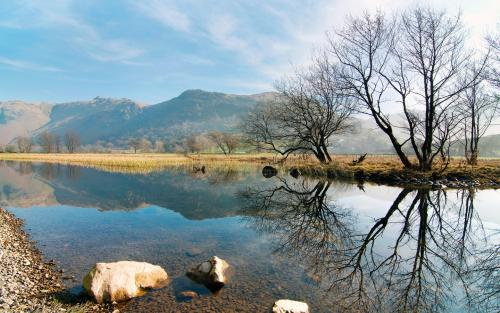

风景（Landscape）包括自然景观和人文景观。是由光对物的反
庐山风景
庐山风景
映所显露出来的一种景象。犹言风光或景物、景色等，涵意至为广泛。在中国古书上，尤其纯文艺作品的诗文方面，更是延用已久，甚至写景多于言情，几乎和旅游打成了一片。像《晋书》便有这么一段：“过江人士，每至暇日，相要出新亭饮宴，周顗（伯仁）叹曰：风景不殊，举目有江山之异。”李白也有：“常时饮酒逐风景，壮士就与功名疏”之句。其他如太白、摩诘、崔颢、杜子美、乐天、杜牧、苏轼、张继，和更早（南北朝）的山水诗人谢灵运等，都是爱好风景的旅游专家。至于风景的特质，和因人得名的名胜略有不同。